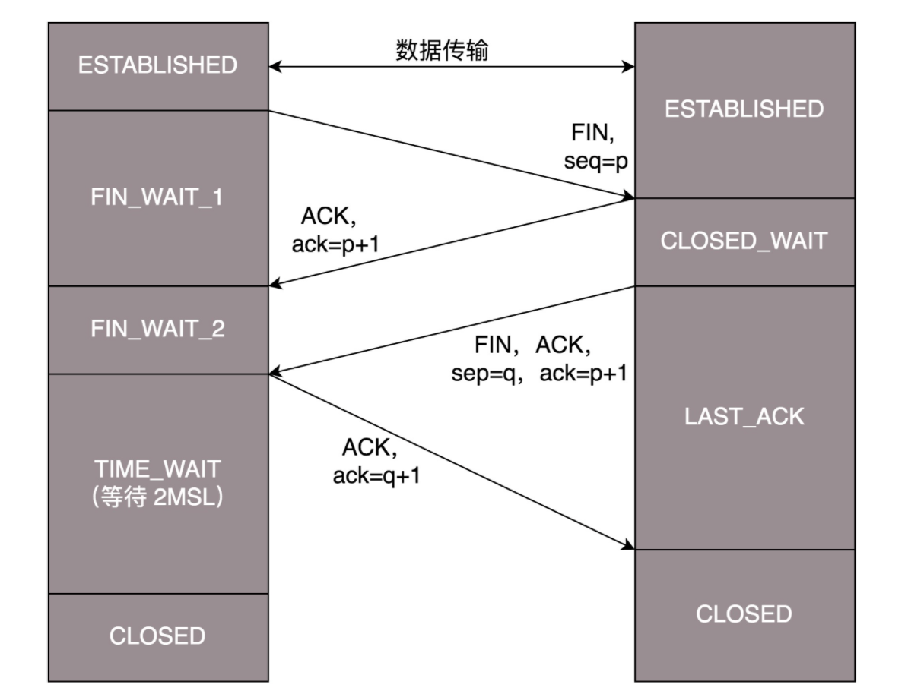

<!DOCTYPE html>
<html>
<head><meta name="generator" content="Hexo 3.9.0">
  <meta charset="utf-8">
  
  <title>TCP/IP 网络协议知识点总结 | what is your main focus for today?</title>
  <meta name="viewport" content="width=device-width, initial-scale=1, maximum-scale=1">
  <meta name="description" content="TCP/IP 模型 TCP 和 UDP TCP 为什么要三次握手 TCP 为什么要四次挥手 网页请求一个 URL 的流程 DNS 工作原理 HTTPS 加密原理 TCP 流量与拥塞控制 HTTP 1.0/1.1/2.0 QUIC 和 HTTP 3.0">
<meta name="keywords" content="网络,TCP,UDP,HTTPS">
<meta property="og:type" content="article">
<meta property="og:title" content="TCP&#x2F;IP 网络协议知识点总结">
<meta property="og:url" content="http://yhaowa.gitee.io/yhaowa/625d4c7c/index.html">
<meta property="og:site_name" content="what is your main focus for today?">
<meta property="og:description" content="TCP/IP 模型 TCP 和 UDP TCP 为什么要三次握手 TCP 为什么要四次挥手 网页请求一个 URL 的流程 DNS 工作原理 HTTPS 加密原理 TCP 流量与拥塞控制 HTTP 1.0/1.1/2.0 QUIC 和 HTTP 3.0">
<meta property="og:locale" content="zh-CN">
<meta property="og:image" content="http://yhaowa.gitee.io/yhaowa/img/tcp_ip.png">
<meta property="og:image" content="http://yhaowa.gitee.io/yhaowa/img/tcp.png">
<meta property="og:image" content="http://yhaowa.gitee.io/yhaowa/img/udp.png">
<meta property="og:image" content="http://yhaowa.gitee.io/yhaowa/img/tcp1.png">
<meta property="og:image" content="http://yhaowa.gitee.io/yhaowa/img/tcp2.png">
<meta property="og:image" content="http://yhaowa.gitee.io/yhaowa/img/http_1.png">
<meta property="og:image" content="http://yhaowa.gitee.io/yhaowa/img/http.png">
<meta property="og:image" content="http://yhaowa.gitee.io/yhaowa/img/http_2.png">
<meta property="og:image" content="http://yhaowa.gitee.io/yhaowa/img/dns2.png">
<meta property="og:image" content="http://yhaowa.gitee.io/yhaowa/img/dns.png">
<meta property="og:image" content="http://yhaowa.gitee.io/yhaowa/img/CA.png">
<meta property="og:image" content="http://yhaowa.gitee.io/yhaowa/img/CA2.png">
<meta property="og:updated_time" content="2021-02-11T17:33:17.503Z">
<meta name="twitter:card" content="summary">
<meta name="twitter:title" content="TCP&#x2F;IP 网络协议知识点总结">
<meta name="twitter:description" content="TCP/IP 模型 TCP 和 UDP TCP 为什么要三次握手 TCP 为什么要四次挥手 网页请求一个 URL 的流程 DNS 工作原理 HTTPS 加密原理 TCP 流量与拥塞控制 HTTP 1.0/1.1/2.0 QUIC 和 HTTP 3.0">
<meta name="twitter:image" content="http://yhaowa.gitee.io/yhaowa/img/tcp_ip.png">
  
    <link rel="alternative" href="/atom.xml" title="what is your main focus for today?" type="application/atom+xml">
  
  
    <link rel="icon" href="/favicon.png">
  
  <link rel="stylesheet" href="/yhaowa/css/style.css">
  <!--[if lt IE 9]><script src="//cdnjs.cloudflare.com/ajax/libs/html5shiv/3.7/html5shiv.min.js"></script><![endif]-->
  
</head></html>
<body>
<div id="container">
  <div id="wrap">
    <header id="header">
  <div id="banner"></div>
  <div id="header-outer" class="outer">
    <div id="header-title" class="inner">
      <h1 id="logo-wrap">
        <a href="/yhaowa/" id="logo">what is your main focus for today?</a>
      </h1>
      
    </div>
    <div id="header-inner" class="inner">
      <nav id="main-nav">
        <a id="main-nav-toggle" class="nav-icon"></a>
        
          <a class="main-nav-link" href="/yhaowa/">首页</a>
        
          <a class="main-nav-link" href="/yhaowa/archives">归档</a>
        
      </nav>
      <nav id="sub-nav">
        
          <a id="nav-rss-link" class="nav-icon" href="/atom.xml" title="RSS Feed"></a>
        
        <a id="nav-search-btn" class="nav-icon" title="Search"></a>
      </nav>
      <div id="search-form-wrap">
        <form action="//www.baidu.com/baidu" method="get" accept-charset="utf-8" class="search-form">
          <input type="search" name="word" maxlength="20" class="search-form-input" placeholder="Search">
          <input type="submit" value="" class="search-form-submit">
          <input name=tn type=hidden value="bds">
          <input name=cl type=hidden value="3">
          <input name=ct type=hidden value="2097152">
          <input type="hidden" name="si" value="yhaowa.gitee.io/yhaowa">
        </form>
      </div>
    </div>
  </div>
</header>
    <div class="outer">
      <section id="main"><article id="post-tcp-ip-网络协议知识点总结" class="article article-type-post" itemscope itemprop="blogPost">
  <div class="article-meta">
    <a href="/yhaowa/625d4c7c/" class="article-date">
  <time datetime="2021-02-08T02:58:16.000Z" itemprop="datePublished">2021-02-08</time>
</a>
    
  <div class="article-category">
    <a class="article-category-link" href="/yhaowa/categories/网络/">网络</a>
  </div>

  </div>
  <div class="article-inner">
    
    
      <header class="article-header">
        
  
    <h1 class="article-title" itemprop="name">
      TCP/IP 网络协议知识点总结
    </h1>
  

      </header>
    
    <div class="article-entry" itemprop="articleBody">
      
        <blockquote>
<ol>
<li>TCP/IP 模型</li>
<li>TCP 和 UDP</li>
<li>TCP 为什么要三次握手</li>
<li>TCP 为什么要四次挥手</li>
<li>网页请求一个 URL 的流程</li>
<li>DNS 工作原理</li>
<li>HTTPS 加密原理</li>
<li>TCP 流量与拥塞控制</li>
<li>HTTP 1.0/1.1/2.0</li>
<li>QUIC 和 HTTP 3.0</li>
</ol>
</blockquote>
<a id="more"></a>
<h2 id="1-TCP-IP-模型"><a href="#1-TCP-IP-模型" class="headerlink" title="1. TCP/IP 模型"></a>1. TCP/IP 模型</h2><p></p>
<p><strong>应用层</strong>：规定应用程序数据格式，处理特定的应用程序细节</p>
<p><strong>传输层</strong>：指定端口供特定应用程序处理，建立端口到端口的通信</p>
<p><strong>网络层</strong>：主要负责寻址和路由选择，将数据传输到目标地址，建立主机到主机的通信</p>
<p><strong>链路层</strong>：数据链路层分为逻辑链路 LLC 子层和介质访问控制 MAC 子层：</p>
<ul>
<li><strong>MAC（Media Access Control）</strong>层主要定义了数据包如何在物理介质上传输，包括数据帧的封装/卸装，帧的寻址和识别，帧的接收与发送，链路的管理，帧的差错控制等，MAC 层的存在屏蔽了不同物理链路的差异性</li>
<li><strong>LLC（Logic Link Control）</strong>层负责识别网络层协议，为上层提供服务，包括传输可靠性保障和控制、传输可靠性保障和控制、数据包的顺序传输</li>
</ul>
<p>在发送数据的时候，MAC 层可以事先判断是否可以发送数据，如果可以则给数据加上一些控制信息，最终将数据以规定格式发送到物理层；在接收数据的时候，MAC 层首先判断是否发生传输错误，如果没有错误，则去掉控制信息后发送至 LLC 层</p>
<p><strong>物理层</strong>：通过光纤、电缆等设备将计算机连接起来，实现二进制数据的传输</p>
<h2 id="2-TCP-和-UDP"><a href="#2-TCP-和-UDP" class="headerlink" title="2. TCP 和 UDP"></a>2. TCP 和 UDP</h2><p></p>
<p><strong>TCP 头结构</strong>：来源端口、目的端口、序号、确认序号、SYN/ACK 等状态位、窗口大小、校验和、紧急指针<br><strong>特点</strong>：面向连接、面向字节流、可靠、有序、速度慢、较重量，流量控制、拥塞控制<br><strong>适用场景</strong>：文件传输、浏览器等<br><strong>应用</strong>：HTTP、HTTPS、RTMP、FTP、SMTP、POP3</p>
<p></p>
<p><strong>UDP</strong> 头结构：来源端口、目的端口、长度域、校验和<br><strong>特点</strong>：无连接、面向报文、不可靠、无序、速度快、轻量、实时性高（无队首阻塞）<br><strong>适用场景</strong>：适用于一对多、即时通讯、视频通话等<br><strong>应用</strong>：DHCP、DNS、QUCI、VXLAN、GTP-U、TFTP、SNMP</p>
<h2 id="3-TCP-为什么要三次握手"><a href="#3-TCP-为什么要三次握手" class="headerlink" title="3. TCP 为什么要三次握手"></a>3. TCP 为什么要三次握手</h2><p></p>
<p>TCP 的可靠连接建立是靠包起始序列号来达成的，三次握手主要目的是客户端和服务端对各自的包起始序列号达成共识：</p>
<ul>
<li>第一次握手：客户端发送 SYN 及<strong>客户端包起始序列号</strong>给服务端</li>
<li>第二次握手：服务端发送 SYN 及<strong>服务端包起始序列号</strong>给客户端，并且还发送 ACK 及<strong>客户端包起始序列号+1</strong>，表示对<strong>客户端包起始序列号</strong>达成共识</li>
<li>第三次握手：客户端发送 ACK 及<strong>服务端包起始序列号+1</strong> 给服务端，表示对<strong>服务端包起始序列号</strong>达成共识</li>
</ul>
<p>而二次无法达成共识目的，四次则报文数量冗余了</p>
<p>包序列号可以认为是唯一的，因为它是以时间自增生成的，每四个多小时才会重复一次，远大于报文最大生成时间 MSL</p>
<h2 id="4-TCP-为什么要四次挥手"><a href="#4-TCP-为什么要四次挥手" class="headerlink" title="4. TCP 为什么要四次挥手"></a>4. TCP 为什么要四次挥手</h2><p></p>
<p>TCP 是全双工的，断开需要确保双向都没有数据要发送了：</p>
<ul>
<li>第一次挥手：客户端发送 FIN 及<strong>客户端包序列号</strong>给服务端，表示客户端没有数据要发送了</li>
<li>第二次挥手：服务端发送 ACK 及<strong>客户端包序列号+1</strong> 给客户端，表示对客户端没有数据发送达成了共识</li>
<li>第三次挥手：服务端发送 FIN 及<strong>服务端包序列号</strong>给客户端，表示服务端没有数据要发送了</li>
<li>第四次挥手：客户端发送 ACK 及<strong>服务端包序列号+1</strong> 给服务端，表示对五福端没有数据发送达成了共识</li>
</ul>
<p>第四次挥手客户端发送 ACK 给服务端后会进入 TIME_WAIT 状态，要等待 2MSL 才真正关闭，两个理由：</p>
<ul>
<li>1.要确保客户端发送的 ACK 能达到服务端，让服务端知道客户端收到了第三次挥手，服务端进而可以断开了</li>
<li>2.要保证本连接中所有的报文都在网络中死翘翘了，防止下个同端口的新连接收到旧连接的报文 </li>
</ul>
<h2 id="5-网页请求一个-URL-的流程"><a href="#5-网页请求一个-URL-的流程" class="headerlink" title="5. 网页请求一个 URL 的流程"></a>5. 网页请求一个 URL 的流程</h2><h5 id="1-HTTP-请求的准备"><a href="#1-HTTP-请求的准备" class="headerlink" title="1.HTTP 请求的准备"></a>1.HTTP 请求的准备</h5><ul>
<li>发起 DNS 请求将域名解析成对应的 IP 地址</li>
<li>建立 TCP 连接，如果开启了 Keep-Alive 机制，也可在多次请求中复用 TCP 连接</li>
</ul>
<h5 id="2-HTTP-请求的构建"><a href="#2-HTTP-请求的构建" class="headerlink" title="2. HTTP 请求的构建"></a>2. HTTP 请求的构建</h5><p></p>
<p>按照 HTTP 报文格式构建报文，包括：</p>
<ul>
<li><strong>请求行</strong>：包括请求方法、URL、HTTP 版本信息，请求方法包括 POST、GET、PUT、DELETE 等</li>
<li><strong>首部</strong>：包括 Accept-Charset（客户端可以接受的字符集）、Content-Type（正文内容格式）、Cache-control（缓存控制）等</li>
<li><strong>正文实体</strong>：当使用 POST、PUT 等请求方法时，通常客户端需要向服务器传递数据，这些数据就存储在请求正文中</li>
</ul>
<h5 id="3-HTTP-请求的发送"><a href="#3-HTTP-请求的发送" class="headerlink" title="3. HTTP 请求的发送"></a>3. HTTP 请求的发送</h5><p></p>
<p>添加 HTTP 头后，报文会经过传输层、网络层、链路层，分别添加上 TCP 头、IP 头和 MAC 头</p>
<p>然后判断目标地址和本机是否在同个局域网，如果是，就通过 ARP 协议获取目标 MAC 地址，放入 MAC 头；如果不在同个局域网，就把网关 MAC 地址放入 MAC 头</p>
<p>网关收到包后取出目标 IP 地址，根据路由协议找到下一跳路由器，获取下一跳路由器 MAC 地址，将包发送过去，这样路由器一跳一跳最终到达目标局域网</p>
<p>最后一跳路由器发现目标地址在自己局域网中，通过 ARP 协议获取目标地址的 MAC 地址，然后将包发送给目标机器</p>
<p>目标机器接收到包后，层层向上，依次解析 MAC 头、IP 头、TCP 头，最后发送给 TCP 头中端口号对应的 HTTP 服务器进程，然后 HTTP 服务器将网页返回给客户端</p>
<h5 id="4-HTTP-返回的构建"><a href="#4-HTTP-返回的构建" class="headerlink" title="4. HTTP 返回的构建"></a>4. HTTP 返回的构建</h5><p></p>
<p>HTTP 返回报文包括：</p>
<ul>
<li><strong>状态行</strong>：包括版本、状态码、短语信息，状态码包括 200(OK)、404(Not Found)、503(Service Unavailable) 等等</li>
<li><strong>首部</strong>：包括 Retry-After（间隔一定时间后可重试）、Content-Type（正文内容格式）等</li>
<li><strong>正文实体</strong>：返回的数据格式，包括 HTML、JSON 等</li>
</ul>
<h2 id="6-DNS-工作原理"><a href="#6-DNS-工作原理" class="headerlink" title="6. DNS 工作原理"></a>6. DNS 工作原理</h2><p></p>
<p>DNS 服务器包括根域名、顶级域名、权威域名三种：</p>
<ul>
<li>根域名 DNS 服务器：返回顶级域 DNS 服务器的 IP 地址</li>
<li>顶级域名 DNS 服务器：返回权威 DNS 服务器的 IP 地址</li>
<li>权威域名 DNS 服务器：返回相应主机的 IP 地址</li>
</ul>
<p></p>
<p>客户端先在本地缓存中查找是否有域名对应的 IP 地址，如果有直接返回，没有则向本地 DNS 服务器发起请求，本地 DNS 服务器检查是否有缓存，没有则向根域名服务器、顶级域名服务器、权威域名服务器依次发起请求，最终得到域名对应的 IP 地址</p>
<h2 id="7-HTTPS-加密原理"><a href="#7-HTTPS-加密原理" class="headerlink" title="7. HTTPS 加密原理"></a>7. HTTPS 加密原理</h2><p>HTTPS 通过非对称加密生成密钥，然后用这个密钥去对称加密传输的数据，通过对称加密和非对称加密结合的方式，既保证传输安全，也保证传输效</p>
<p>非对称加密的私钥不会在互联网上传输，可以保证私钥的私密性，但公钥是公开的，可能被冒充，所以需要通过证书和权威机构来验证公钥的合法性</p>
<p></p>
<p>服务器需向 CA （Certificate Authority）权威认证机构申请数字证书，CA 用自己的私钥对服务器个人信息与服务器公钥生成数字签名后，再和服务器个人信息与服务器公钥一起形成数字证书</p>
<p>，客户端需用 CA 的公匙解密数字证书并验证数字证书的合法性</p>
<p></p>
<p>客户端发起请求时，服务器会将数字证书发送给客户端，客户端用 CA 公钥解密数字签名生成服务器信息摘要，再和证书中的服务器信息摘要进行对比，以此验证数字证书是否是 CA 颁发的合法证书</p>
<p>但 CA 的公钥也可能被冒充，为了验证 CA 公钥的合法性，CA 也要有 CA 自身的数字证书，由更可信、更权威的 CA 机构签名生成，由此形成多层级的认证机构，客户端设备默认内置了一部分权威机构的根证书</p>
<h2 id="8-TCP-流量与拥塞控制"><a href="#8-TCP-流量与拥塞控制" class="headerlink" title="8. TCP 流量与拥塞控制"></a>8. TCP 流量与拥塞控制</h2><h2 id="9-HTTP-1-0-1-1-2-0"><a href="#9-HTTP-1-0-1-1-2-0" class="headerlink" title="9. HTTP 1.0/1.1/2.0"></a>9. HTTP 1.0/1.1/2.0</h2><h2 id="10-QUIC-和-HTTP-3-0"><a href="#10-QUIC-和-HTTP-3-0" class="headerlink" title="10. QUIC 和 HTTP 3.0"></a>10. QUIC 和 HTTP 3.0</h2>
      
    </div>
    <footer class="article-footer">
      
        <a data-url="http://yhaowa.gitee.io/yhaowa/625d4c7c/" data-id="ckkxdyph0002botcab3z11vq3" class="article-share-link" data-share="baidu" data-title="TCP/IP 网络协议知识点总结">分享到</a>
      

      

      
  <ul class="article-tag-list"><li class="article-tag-list-item"><a class="article-tag-list-link" href="/yhaowa/tags/HTTPS/">HTTPS</a></li><li class="article-tag-list-item"><a class="article-tag-list-link" href="/yhaowa/tags/TCP/">TCP</a></li><li class="article-tag-list-item"><a class="article-tag-list-link" href="/yhaowa/tags/UDP/">UDP</a></li><li class="article-tag-list-item"><a class="article-tag-list-link" href="/yhaowa/tags/网络/">网络</a></li></ul>

    </footer>
  </div>
  
    
<nav id="article-nav">
  
  
    <a href="/yhaowa/28077273/" id="article-nav-older" class="article-nav-link-wrap">
      <strong class="article-nav-caption">上一篇</strong>
      <div class="article-nav-title">Android APT 开发实践</div>
    </a>
  
</nav>

  
</article>

</section>
      
      <aside id="sidebar">
  
    
  <div class="widget-wrap">
    <h3 class="widget-title">分类</h3>
    <div class="widget">
      <ul class="category-list"><li class="category-list-item"><a class="category-list-link" href="/yhaowa/categories/Android/">Android</a><span class="category-list-count">13</span></li><li class="category-list-item"><a class="category-list-link" href="/yhaowa/categories/Framework/">Framework</a><span class="category-list-count">10</span></li><li class="category-list-item"><a class="category-list-link" href="/yhaowa/categories/Java/">Java</a><span class="category-list-count">3</span></li><li class="category-list-item"><a class="category-list-link" href="/yhaowa/categories/深度学习/">深度学习</a><span class="category-list-count">1</span></li><li class="category-list-item"><a class="category-list-link" href="/yhaowa/categories/网络/">网络</a><span class="category-list-count">1</span></li><li class="category-list-item"><a class="category-list-link" href="/yhaowa/categories/音视频/">音视频</a><span class="category-list-count">11</span></li></ul>
    </div>
  </div>

  
    
  <div class="widget-wrap">
    <h3 class="widget-title">标签云</h3>
    <div class="widget tagcloud">
      <a href="/yhaowa/tags/ANativeWindow/" style="font-size: 10px;">ANativeWindow</a> <a href="/yhaowa/tags/APT/" style="font-size: 10px;">APT</a> <a href="/yhaowa/tags/Ashmem/" style="font-size: 10px;">Ashmem</a> <a href="/yhaowa/tags/Autolock/" style="font-size: 10px;">Autolock</a> <a href="/yhaowa/tags/BinderProxy/" style="font-size: 10px;">BinderProxy</a> <a href="/yhaowa/tags/BpBinder/" style="font-size: 10px;">BpBinder</a> <a href="/yhaowa/tags/BufferQueue/" style="font-size: 10px;">BufferQueue</a> <a href="/yhaowa/tags/COW/" style="font-size: 10px;">COW</a> <a href="/yhaowa/tags/Caffe/" style="font-size: 10px;">Caffe</a> <a href="/yhaowa/tags/FFmpeg/" style="font-size: 20px;">FFmpeg</a> <a href="/yhaowa/tags/Fmod/" style="font-size: 10px;">Fmod</a> <a href="/yhaowa/tags/GUI/" style="font-size: 10px;">GUI</a> <a href="/yhaowa/tags/Glide/" style="font-size: 10px;">Glide</a> <a href="/yhaowa/tags/Gralloc/" style="font-size: 10px;">Gralloc</a> <a href="/yhaowa/tags/HTTPS/" style="font-size: 10px;">HTTPS</a> <a href="/yhaowa/tags/IPCThreadState/" style="font-size: 10px;">IPCThreadState</a> <a href="/yhaowa/tags/JavaPoet/" style="font-size: 10px;">JavaPoet</a> <a href="/yhaowa/tags/LMK/" style="font-size: 10px;">LMK</a> <a href="/yhaowa/tags/Linux-IPC/" style="font-size: 10px;">Linux IPC</a> <a href="/yhaowa/tags/Linux-driver/" style="font-size: 10px;">Linux driver</a> <a href="/yhaowa/tags/Mutex/" style="font-size: 10px;">Mutex</a> <a href="/yhaowa/tags/OpenGL/" style="font-size: 12.5px;">OpenGL</a> <a href="/yhaowa/tags/ProcessState/" style="font-size: 10px;">ProcessState</a> <a href="/yhaowa/tags/RecycleView/" style="font-size: 12.5px;">RecycleView</a> <a href="/yhaowa/tags/Service-Manager/" style="font-size: 10px;">Service Manager</a> <a href="/yhaowa/tags/SoundTouch/" style="font-size: 10px;">SoundTouch</a> <a href="/yhaowa/tags/TCP/" style="font-size: 10px;">TCP</a> <a href="/yhaowa/tags/UDP/" style="font-size: 10px;">UDP</a> <a href="/yhaowa/tags/Ubuntu/" style="font-size: 10px;">Ubuntu</a> <a href="/yhaowa/tags/ViewModel/" style="font-size: 10px;">ViewModel</a> <a href="/yhaowa/tags/ams/" style="font-size: 10px;">ams</a> <a href="/yhaowa/tags/aop/" style="font-size: 10px;">aop</a> <a href="/yhaowa/tags/asm/" style="font-size: 10px;">asm</a> <a href="/yhaowa/tags/binder/" style="font-size: 15px;">binder</a> <a href="/yhaowa/tags/cmake/" style="font-size: 10px;">cmake</a> <a href="/yhaowa/tags/epoll/" style="font-size: 10px;">epoll</a> <a href="/yhaowa/tags/h264/" style="font-size: 10px;">h264</a> <a href="/yhaowa/tags/handler/" style="font-size: 12.5px;">handler</a> <a href="/yhaowa/tags/ijkplayer/" style="font-size: 15px;">ijkplayer</a> <a href="/yhaowa/tags/kotlin/" style="font-size: 10px;">kotlin</a> <a href="/yhaowa/tags/log/" style="font-size: 10px;">log</a> <a href="/yhaowa/tags/mmap/" style="font-size: 12.5px;">mmap</a> <a href="/yhaowa/tags/plugin/" style="font-size: 10px;">plugin</a> <a href="/yhaowa/tags/service/" style="font-size: 10px;">service</a> <a href="/yhaowa/tags/startActivity/" style="font-size: 10px;">startActivity</a> <a href="/yhaowa/tags/surface/" style="font-size: 10px;">surface</a> <a href="/yhaowa/tags/vsync/" style="font-size: 10px;">vsync</a> <a href="/yhaowa/tags/window/" style="font-size: 12.5px;">window</a> <a href="/yhaowa/tags/wms/" style="font-size: 10px;">wms</a> <a href="/yhaowa/tags/侧滑菜单/" style="font-size: 12.5px;">侧滑菜单</a> <a href="/yhaowa/tags/内部类/" style="font-size: 10px;">内部类</a> <a href="/yhaowa/tags/刘海屏适配/" style="font-size: 10px;">刘海屏适配</a> <a href="/yhaowa/tags/单例/" style="font-size: 10px;">单例</a> <a href="/yhaowa/tags/并发编程/" style="font-size: 10px;">并发编程</a> <a href="/yhaowa/tags/开发模式/" style="font-size: 10px;">开发模式</a> <a href="/yhaowa/tags/总结/" style="font-size: 10px;">总结</a> <a href="/yhaowa/tags/悬浮窗/" style="font-size: 10px;">悬浮窗</a> <a href="/yhaowa/tags/比特率/" style="font-size: 10px;">比特率</a> <a href="/yhaowa/tags/线程池/" style="font-size: 10px;">线程池</a> <a href="/yhaowa/tags/网络/" style="font-size: 10px;">网络</a> <a href="/yhaowa/tags/虚拟内存/" style="font-size: 10px;">虚拟内存</a> <a href="/yhaowa/tags/读书笔记/" style="font-size: 17.5px;">读书笔记</a> <a href="/yhaowa/tags/采样率/" style="font-size: 10px;">采样率</a>
    </div>
  </div>

  
    
  <div class="widget-wrap">
    <h3 class="widget-title">近期文章</h3>
    <div class="widget">
      <ul>
        
          <li>
            <a href="/yhaowa/625d4c7c/">TCP/IP 网络协议知识点总结</a>
          </li>
        
          <li>
            <a href="/yhaowa/28077273/">Android APT 开发实践</a>
          </li>
        
          <li>
            <a href="/yhaowa/649d55e5/">Android Handler epoll 机制分析</a>
          </li>
        
          <li>
            <a href="/yhaowa/f9fd2518/">开发编写的 View 控件，是怎么变成屏幕上图像的？</a>
          </li>
        
          <li>
            <a href="/yhaowa/52cb86d4/">Android 消息屏障与异步消息</a>
          </li>
        
      </ul>
    </div>
  </div>

  
    
  <div class="widget-wrap">
    <h3 class="widget-title">友情链接</h3>
    <div class="widget">
      <ul>
        
          <li>
            <a href="https://github.com/yhaolpz" target="_blank">我的「GitHub」</a>
          </li>
        
          <li>
            <a href="http://blog.csdn.net/yhaolpz" target="_blank">我的「CSDN」</a>
          </li>
        
          <li>
            <a href="https://moonshoter.github.io/" target="_blank">Moonshot</a>
          </li>
        
      </ul>
    </div>
  </div>

  
</aside>
      
    </div>
    <footer id="footer">
  
  <div class="outer">
    <div id="footer-info" class="inner">
      &copy; 2021 Ahab<br>
      Powered by <a href="//hexo.io/" target="_blank">Hexo</a>
      .
      Theme by <a href="https://github.com/xiangming/landscape-plus" target="_blank">Landscape-plus</a>
    </div>
  </div>
</footer>
  </div>
  <nav id="mobile-nav">
  
    <a href="/yhaowa/" class="mobile-nav-link">首页</a>
  
    <a href="/yhaowa/archives" class="mobile-nav-link">归档</a>
  
</nav>
  <!-- totop start -->
<div id="totop">
<a title="返回顶部"></a>
</div>

<!-- totop end -->


<!-- 百度分享 start -->

<div id="article-share-box" class="article-share-box">
  <div id="bdshare" class="bdsharebuttonbox article-share-links">
    <a class="article-share-weibo" data-cmd="tsina" title="分享到新浪微博"></a>
    <a class="article-share-weixin" data-cmd="weixin" title="分享到微信"></a>
    <a class="article-share-qq" data-cmd="sqq" title="分享到QQ"></a>
    <a class="article-share-renren" data-cmd="renren" title="分享到人人网"></a>
    <a class="article-share-more" data-cmd="more" title="更多"></a>
  </div>
</div>
<script>
  function SetShareData(cmd, config) {
    if (shareDataTitle && shareDataUrl) {
      config.bdText = shareDataTitle;
      config.bdUrl = shareDataUrl;
    }
    return config;
  }
  window._bd_share_config={
    "common":{onBeforeClick: SetShareData},
    "share":{"bdCustomStyle":"/yhaowa/css/bdshare.css"}
  };
  with(document)0[(getElementsByTagName('head')[0]||body).appendChild(createElement('script')).src='//bdimg.share.baidu.com/static/api/js/share.js?cdnversion='+~(-new Date()/36e5)];
</script>

<!-- 百度分享 end -->

<script src="//cdnjs.cloudflare.com/ajax/libs/jquery/1.11.1/jquery.min.js"></script>


  <link rel="stylesheet" href="/yhaowa/fancybox/jquery.fancybox.css">
  <script src="/yhaowa/fancybox/jquery.fancybox.pack.js"></script>


<! -- mathjax config similar to math.stackexchange -->

<script type="text/x-mathjax-config">
MathJax.Hub.Config({
tex2jax: {
          inlineMath: [ ['$','$'], ["\\(","\\)"]  ],
                processEscapes: true
                    
}
  
        });
</script>

<script type="text/x-mathjax-config">
MathJax.Hub.Config({
tex2jax: {
            skipTags: ['script', 'noscript', 'style', 'textarea', 'pre', 'code']
                  
}
    
        });
</script>

<script type="text/x-mathjax-config">
MathJax.Hub.Queue(function() {
            var all = MathJax.Hub.getAllJax(), i;
            for(i=0; i < all.length; i += 1) {
                            all[i].SourceElement().parentNode.className += ' has-jax';
                                    
            }
                
        });
</script>

<script type="text/javascript" src="//cdn.bootcss.com/mathjax/2.5.3/MathJax.js?config=TeX-AMS-MML_HTMLorMML">
</script>


<script src="/yhaowa/js/script.js"></script>

</div>
</body>
</html>
